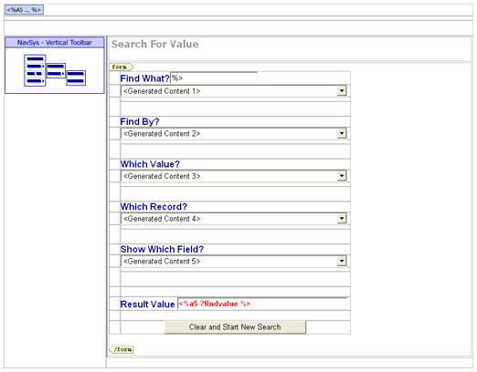
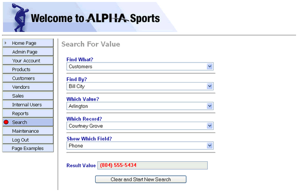

ASWSEARCH.A5W
Purpose
The application administrator uses the ASWSEARCH.A5W page to find the value of any field in any record in the customers, products, and invoices tables.
Description
The ASWSEARCH.A5W page illustrates several advanced techniques:
Using Xbasic to populate a HTML page
Using user defined functions (UDFs) on a page
Using JavaScript to submit a page and create a cascading lookup
This page uses conventional HTML, page styles, and an Alpha Five style sheet. We originally created the page in another HTML editing program. The Xbasic code populates the sub-variables of a dot variable. The dot variable carries these values to a series of user functions, which populate a series of drop down boxes.
We used embedded <%a5 ... %> tags to add the variable values to the page in the correct locations.
The javascript statement on
The page uses its own unique cascading style sheet named searchpg.css.
Links
The Search entry of the NAV_INT navigation component displays the ASWSEARCH.A5W page.

ASWSEARCH.A5W in the WYSIWYG tab of the HTML Editor

ASWSEARCH.A5W in the Browser
Edits to the Page Source
This code adds a user defined function. It is used to create empty drop down list boxes.
|
FUNCTION clear_all_select as P ( ) empty_option = " <option value=\"\">< Select ></option>" with clear_all_select optionby = empty_option optionval = empty_option optionrec = empty_option optionfield = empty_option end with END FUNCTION |
The A5W_INCLUDE() function adds functions of SEARCH_UDF.A5W, which behave as if they were actually defined on this page. This allows for easier editing of the functions. Included functions must appear on the page before they are called..
|
a5w_include("search_UDF.a5w") |
Currselections is a hidden field which stores currently selected values. The format of this character variable is findwhat +"|"+ findby +"|"+ findrec +"|"+ findfield. These are the values for each selection before the page is submitted. Currselections is passed back to the page on every submit. parms is a dot variable used to create the drop down list for the select boxes. For example, the HTML for the options for the Find What? control are returned in parms.optionwhat. Refer to SEARCH_UDF.A5W to see how the various functions were written.
|
dim findwhat as c dim findby as c dim findval as c dim findrec as c dim findfield as c dim findvalue as c dim currselections as c dim parms as p if eval_valid("submit") = .T. then findwhat = "" findby = "" findval = "" findrec = "" findfield = "" findvalue = "" currselections = findwhat +"|"+ findby +"|"+ findval +"|"+ findrec +"|"+ findfield parms = clear_all_select() parms.optionwhat = fill_optionwhat(currselections) else currselections = findwhat +"|"+ findby +"|"+ findval +"|"+ findrec +"|"+ findfield parms.optionwhat = fill_optionwhat(currselections) parms.optionby = fill_optionby(currselections) parms.optionval = fill_optionval(currselections) parms.optionrec = fill_optionrec(currselections) parms.optionfield = fill_optionfield(currselections) findvalue = find_value(currselections) end if |
The location = "Search" statement highlights the Search entry of the menu.
|
with tmpl_NAV_INT location = "Search" componentName = "NAV_INT" end with |
The A5W_INCLUDE() statement is in the top row of the table. It loads TOPPAGE.A5W and displays a standard page header.
|
<body> <p> <table cellSpacing=0 cellPadding=0 width="800" border=0> <tr> <td colspan="2"> <%a5 a5w_include("toppage.a5w") %> </td> </tr> |
The majority of the page is a <form>. The first <input> control saves the value of Currselections.
|
<form name="form1" method="post" action=" <%a5 ?request.request_uri %> "> <table width="425" border="0" cellspacing="0" cellpadding="0" class="font"> <tr> <td class="label">Find What? <input name="currselections" type="hidden" id="currselections" value="<%a5 ?currselections %>"> </td> |
The next five <input> controls display lists of values that are computed by the fill_option... functions above.
|
<tr> <td class="spacer"> </td> <td> <select
name="findwhat" id="findwhat" on <%a5 ? parms.optionwhat %> </select> </td> </tr> <tr> <td> </td> <td><hr></td> </tr> <tr> <td> </td> <td class="label">Find By? </td> </tr> <tr> <td> </td> <td> <select
name="findby" id="findby" on <%a5 ? parms.optionby %> </select> </td> </tr> <tr> <td> </td> <td><hr></td> </tr> <tr> <td> </td> <td class="label">Which Value? </td> </tr> <tr> <td> </td> <td> <select
name="findval" id="findval" on <%a5 ? parms.optionval %> </select> </td> </tr> <tr> <td> </td> <td><hr></td> </tr> <tr> <td> </td> <td class="label">Which Record? </td> </tr> <tr> <td> </td> <td> <select
name="findrec" id="findrec" on <%a5 ?parms.optionrec %> </select> </td> </tr> <tr> <td> </td> <td><hr></td> </tr> <tr> <td> </td> <td class="label">Show Which Field? </td> </tr> <tr> <td> </td> <td><select
name="findfield" id="findfield" on <%a5 ?parms.optionfield %> </select> </td> </tr> <tr> <td> </td> <td><hr></td> </tr> <tr> <td> </td> <td> </td> </tr> <tr> <td> </td> <td> <label for="textfield" class="label">Result Value</label> <input name="findvalue" class="boxred" id="findvalue" value=" <%a5 ? findvalue %> " readonly> </td> </tr> <tr> <td> </td> <td> </td> </tr> <tr> <td> </td> <td align="middle"> <input name="Submit" type="submit" class="bigbutton" value="Clear and Start New Search"> </td> </tr> |
Page Security Information
Login Required
Groups Allowed > Accounting, Administrators, Clerical, Marketing
See Also